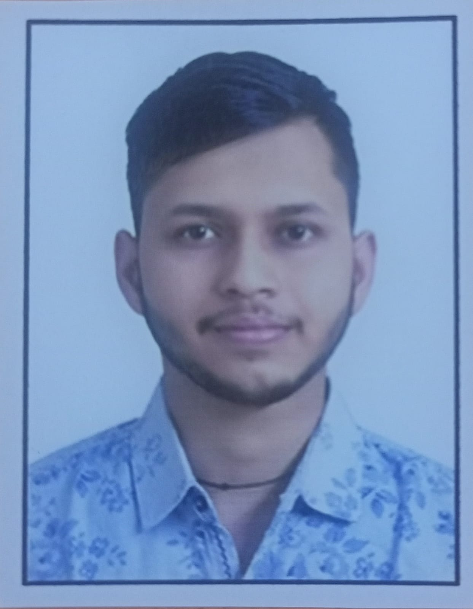

Rishav Singh

Summary
Proven ability to adapt quickly to new challenges and consistently deliver results in dynamic environments.
Education
- Comepleted My Schooling From C.B.S.E board New DELHI.
- Comepleted My Diploma From HSBTE.(2020-23)
- Comepleted My B.Tech CSE(AI&ML) Degree From SVSU.(2023-26)
Work Experience
From March to Till Date
Skills
- Project Management⭐⭐⭐
Highlight your ability to plan, organize, and oversee projects from initiation through completion. Mention specific projects you've managed, detailing your role, responsibilities, and outcomes achieved. Showcase skills such as budget management, timeline adherence, and stakeholder communication.
- Problem Solving⭐⭐
Demonstrate your capacity to analyze complex problems, identify root causes, and develop practical solutions. Include examples where you've successfully resolved challenging situations or improved processes. Highlight skills like critical thinking, creativity, and the ability to work under pressure.
- Communication Skills⭐⭐⭐
Emphasize your proficiency in both verbal and written communication. Showcase your ability to convey information clearly and effectively to diverse audiences, including colleagues, clients, and stakeholders. Mention any experience with public speaking, presentations, or writing reports/documentation.
Awards/certifications
- Alibaba Cloud Certificate By Alibaba Cloud (2026)
- Certified Ethical Hacking By EC-Council (2020)
Other
Hobbies
Contact Details